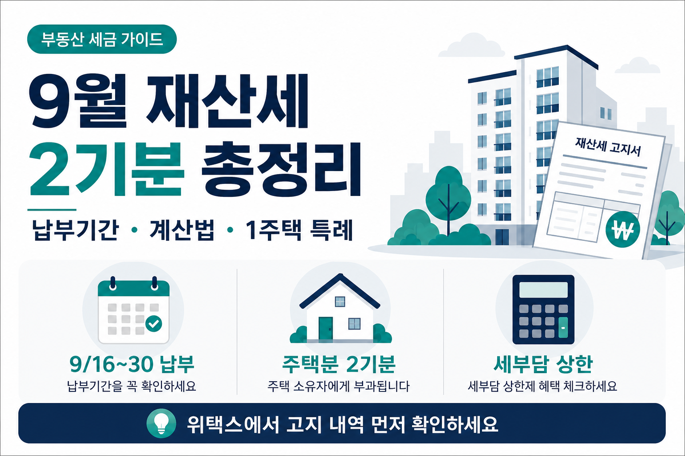

은퇴하면보료 폭탄? 2026년 피부양자 탈락 기준 총정리
소득 2,000만원·재산 9억·부부 동반 탈락까지, 탈락 전에 알아두면 덜 당황합니다

직장에 다닐 때 건강보험료는 급여명세서에 한 줄로 찍혔습니다. 본인이 내는 몫만 보면 작아 보이죠. 그런데 퇴직하고 나면 그 줄이 사라지고, 우편함이나 문자로 고지서가 옵니다. “배우자 피부양자로 묶여 있으니 괜찮지 않나?” 하다가, 연금이나 금융소득 때문에 갑자기 탈락 통지를 받는 분들이 생각보다 많습니다. 오늘은 2026년 기준으로 확정된 피부양자 탈락 기준만 모아, 소득·재산·부부 동반 탈락·경감 제도까지 초보 눈높이로 정리합니다.
먼저 읽어주세요
본 글은 정보 제공이며 보험료 절감 자문·상품 권유가 아닙니다. 개인별 소득·재산·가족관계가 다르면 결과가 달라집니다. 아래 수치는 공단이 발표한 기준과 통계를 바탕으로 했지만, 경감·임의계속 등 일부 제도는 운영 기한·신청 요건이 바뀔 수 있습니다. 정확한 자격·보험료는 국민건강보험공단(nhis.go.kr) 및 지사 확인 필수입니다. 결정은 본인 상황과 전문가 상담 후에 하세요.
- 피부양자 소득·재산 탈락 기준을 표로 정리합니다.
- 2022년 9월 2단계 개편 이후 공적연금으로 탈락한 실제 통계를 인용합니다.
- 지역가입자 전환 시 경감·임의계속·소득 정산 등 완화 제도를 안내합니다.
1. 도입 — 급여에서 한 줄이던 보료가 고지서로 온다
월급쟁이로 오래 일하신 분들에게 건강보험료는 “회사가 절반 내주는 줄”로 기억되는 경우가 많습니다. 실제로 직장가입자는 본인과 회사가 각각 부담하는 구조입니다. 퇴직하면 그 절반 지원이 사라지고, 배우자 직장가입자의 피부양자로 남을 수 있으면 보험료 0원이 될 수 있습니다. 그런데 피부양자는 “가족이니까 자동”이 아닙니다. 소득·재산·가족관계·실제 부양 요건을 맞춰야 하고, 한 번 탈락하면 지역가입자로 전환되어 소득과 재산을 함께 봅니다.
선배 모임에서 “은퇴하면보료 폭탄”이라는 말을 들으면 겁이 납니다. 이 글은 겁을 키우기 위한 글이 아니라, 탈락 기준을 미리 읽고 대비하는 글입니다. 가입 유형 전체 비교가 필요하면 은퇴 건강보험료 총정리 글을 먼저 보시고, 오늘은 “피부양자에서 떨어지는 순간”에 집중합니다. 정확한 자격·보험료는 국민건강보험공단(nhis.go.kr) 및 지사 확인 필수입니다.
연말정산 때 봤던 건강보험료는 본인 부담분만 보여 줍니다. 은퇴 후에는 배우자 급여명세서에서 사라지고, 대신 별도 고지 체계로 넘어갑니다. 우편 고지서·모바일 알림을 놓치면 체납·연체 이야기까지 이어질 수 있어, 탈락 가능성이 있는 시점에는 연락처·자동이체를 미리 점검해 두는 것도 실용적입니다. 정확한 자격·보험료는 국민건강보험공단(nhis.or.kr) 및 지사 확인 필수입니다.
2. 피부양자가 뭐고, 왜 은퇴자에게 중요한가
피부양자는 직장가입자(보통 배우자)에게 건강보험 자격이 “얹히는” 형태입니다. 요건을 맞추면 본인 보험료는 0원입니다. 반대로 탈락하면 지역가입자가 되어, 전년도 소득과 재산 과세표준을 바탕으로 보험료가 산정됩니다. “0원에서 매달 수만 원~십만 원대”로 바뀌는 체감이 커서, 은퇴 설계에서 빼놓기 어려운 변수입니다.
피부양자
직장가입자 가족으로 묶이면 보험료 0원. 소득·재산 기준을 넘으면 탈락.
지역가입자
본인 100% 부담. 소득보험료 + 재산보험료가 합쳐집니다.
2022년 9월 피부양자 소득 요건이 2단계로 강화되면서, 기존 연 3,400만원 이하에서 연 2,000만원 이하로 대폭 낮아졌습니다. 공적연금(국민연금·공무원연금·사학연금·군인연금 등)은 소득 산정에 100% 반영됩니다. “연금만 받는데 괜찮겠지”가 더 이상 통하지 않는 경우가 늘었다는 뜻입니다. 정확한 자격·보험료는 국민건강보험공단(nhis.go.kr) 및 지사 확인 필수입니다.
직장에 남아 있는 배우자가 없으면 피부양자 자격 자체가 성립하지 않습니다. 그때는 처음부터 지역가입자로 가거나, 퇴직 직전 조건이 맞다면 임의계속가입을 검토하는 경우가 있습니다. 은퇴를 앞둔 가정에서는 “누가 언제 직장을 그만두는지” 순서가 건보에도 영향을 줄 수 있습니다. 정확한 자격·보험료는 국민건강보험공단(nhis.or.kr) 및 지사 확인 필수입니다.
3. 탈락 기준 ① — 소득 요건 (연 2,000만원)
피부양자 소득 요건의 핵심은 연간 합산소득 2,000만원입니다. 이 금액을 넘기면 자격이 상실됩니다. 공적연금은 100% 반영되므로, 월 연금이 대략 166만 원을 넘으면(연 2,000만원 ÷ 12) 소득 요건만 놓고 보면 위험 구간에 들어갑니다. 개인연금·퇴직연금 같은 사적연금은 현재 소득 산정에서 제외됩니다. 다만 금융소득(이자·배당)이 연 1,000만원을 넘으면 전액 합산되어 2,000만원 기준을 넘기기 쉽습니다.
| 소득 종류 | 피부양자 산정 | 초보 체크 포인트 |
|---|---|---|
| 공적연금 | 100% 반영 | 국민·공무원·사학·군인연금 등. 연 2,000만원 한도의 핵심 |
| 사적연금 | 현재 제외 | 개인연금·퇴직연금 등. “안 잡힌다”고 단정 후 방심 금지 |
| 금융소득 | 연 1,000만원 초과 시 전액 합산 | 이자·배당 합산. 조금 넘어도 2,000만원 돌파 쉬움 |
| 합산 한도 | 연 2,000만원 초과 시 탈락 | 기존 3,400만원에서 2단계 개편으로 하향 |
※ 소득 항목·반영 방식은 시기에 따라 달라질 수 있습니다. 정확한 자격·보험료는 국민건강보험공단(nhis.go.kr) 및 지사 확인 필수입니다.
연금을 받기 시작하면서 소득이 늘어나는 시점과, 연금소득 과세를 따로 보는 시점이 겹치면 더 헷갈립니다. 세금은 홈택스, 건보 자격은 공단 — 창구가 다릅니다. 국민연금 수령 시기를 조절하는 이야기는 국민연금 조기 vs 연기 글에서 비율만 참고하시고, 건보 소득 반영은 공단에 확인하세요. 정확한 자격·보험료는 국민건강보험공단(nhis.go.kr) 및 지사 확인 필수입니다.
4. 탈락 기준 ② — 재산 요건 (5.4억·9억)
소득만 맞춰도 재산 과세표준이 기준을 넘으면 탈락합니다. 피부양자 재산 요건은 재산세 과세표준으로 봅니다. 시세·호가가 아니라 과세표준이 기준이라는 점을 먼저 기억하세요. 집이 있어도 과표가 5.4억원 이하면 소득 요건만 맞으면 유지될 수 있고, 9억원을 넘으면 소득과 관계없이 탈락합니다.
| 재산세 과세표준 | 소득 조건 | 결과 |
|---|---|---|
| 5.4억원 이하 | 연 소득 2,000만원 이하 등 소득 요건 충족 | 재산만 보면 유지 가능(다른 요건도 필요) |
| 5.4억원 초과 ~ 9억원 이하 | 연 소득 1,000만원 이하일 때만 유지 | 소득이 조금만 커도 탈락 |
| 9억원 초과 | 소득 무관 | 무조건 탈락 |
※ 과세표준은 위택스·재산세 고지서에서 확인하세요. 정확한 자격·보험료는 국민건강보험공단(nhis.go.kr) 및 지사 확인 필수입니다.
“우리 집 시세는 7억인데”라고 말해도, 건보는 과표를 봅니다. 배우자 명의 아파트 한 채가 과표 9억을 넘으면, 본인 소득이 낮아도 피부양자에서 떨어질 수 있습니다. 은퇴 전에 과세표준을 한 번 적어 두고, 공단 자격 조회 화면과 대조하는 습관이 도움이 됩니다.
5.4억원을 넘는 구간에서는 연 소득 1,000만원이라는 또 다른 줄이 생깁니다. 배우자 연금이 연 1,000만원을 조금만 넘어도, 과표가 5.4억원을 초과한 집을 보유한 가정은 피부양자에서 떨어질 수 있습니다. “소득은 괜찮은데 집값 때문에”라는 이야기가 이 구간에서 나옵니다. 정확한 자격·보험료는 국민건강보험공단(nhis.or.kr) 및 지사 확인 필수입니다.
5. 부부 동반 탈락 — 한 명이 넘으면 둘 다 떨어질 수 있다
피부양자 제도에서 놓치기 쉬운 게 부부 동반 탈락입니다. 부부 중 한 명이 소득 요건을 초과해 지역가입자로 전환되면, 배우자도 소득·재산 관계없이 피부양자 자격을 잃을 수 있습니다. “나는 소득이 없는데 왜?”라는 질문이 여기서 나옵니다. 한 명의 연금·금융소득이 가족 전체의 건보 자격에 영향을 줄 수 있다는 뜻입니다. 공무원연금 수급자 비중이 69.8%로 가장 높게 나온 통계는, 공적연금이 높은 직군일수록 소득 한도에 먼저 닿을 수 있다는 신호로 읽을 수 있습니다. 은퇴 전 가족 회의에서 “누구 연금이 먼저 2,000만원에 닿는지”를 함께 적어 보세요. 정확한 자격·보험료는 국민건강보험공단(nhis.or.kr) 및 지사 확인 필수입니다.
| 항목 | 수치 | 비고 |
|---|---|---|
| 탈락 지역가입자 합계 | 314,474명 | 2022년 9월 2단계 개편 이후 ~ 2025년 2월, 공적연금 2,000만원 초과 |
| 동반 탈락자 | 116,306명 (37%) | 배우자도 피부양자 자격 상실 |
| 공무원연금 | 219,000명 (69.8%) | 연금 유형별 탈락자 중 비중 |
| 국민연금 | 47,000명 (15.1%) | 연금 유형별 탈락자 중 비중 |
| 사학연금 | 25,000명 (8.0%) | 연금 유형별 탈락자 중 비중 |
| 군인연금 | 20,000명 (6.6%) | 연금 유형별 탈락자 중 비중 |
| 탈락 후 평균 월 보험료 | 약 99,190원 | 2025년 2월 기준 지역가입자 |
※ 통계는 공단 발표 자료를 바탕으로 했습니다. 정확한 자격·보험료는 국민건강보험공단(nhis.go.kr) 및 지사 확인 필수입니다.
표의 연금 유형별 인원은 “21.9만명”처럼 반올림해 읽기 쉽게 적은 것이 아니라, 공단이 공개한 219,000명·47,000명 등의 수치를 그대로 옮겼습니다. 평균 월 보험료 약 99,190원은 0원이던 피부양자에서 지역가입자로 넘어갈 때의 체감을 보여 줍니다. 개인별 재산·소득에 따라 더 높거나 낮을 수 있습니다. 정확한 자격·보험료는 국민건강보험공단(nhis.go.kr) 및 지사 확인 필수입니다.
6. 탈락하면 어떻게 되나 — 경감 제도와 재산 1억 공제
피부양자에서 떨어지면 지역가입자 보험료를 내게 됩니다. 다만 바로 “전액”만 있는 것은 아닙니다. 중저가 주택 은퇴자를 위한 재산 기본 공제 확대, 피부양자 탈락자 대상 단계적 경감 등 완화 장치가 안내되고 있습니다. 다만 경감 제도는 운영 기한이 정해져 있을 수 있으므로, 현재 시행 여부·신청 방법은 반드시 건보공단에서 확인하라고 안내드립니다. 이 글에서 기한을 단정하지 않습니다.
| 경과 연차 | 감면율 | 메모 |
|---|---|---|
| 1년차 | 80% 감면 | 탈락 직후 부담 완화 목적 |
| 2년차 | 60% 감면 | 단계적 축소 구조 |
| 3년차 | 40% 감면 | 단계적 축소 구조 |
| 4년차 | 20% 감면 | 이후 전액 부담으로 전환될 수 있음 |
| 제도 | 내용 | 확인 포인트 |
|---|---|---|
| 재산 기본 공제 | 1억원으로 확대 | 중저가 주택 보유 은퇴자 재산보험료 부담 경감 |
| 단계적 경감 | 1~4년차 80→60→40→20% 감면 | 운영 기한·대상 요건은 공단 확인 |
※ 경감·공제 적용 여부는 개인별로 다릅니다. 정확한 자격·보험료는 국민건강보험공단(nhis.go.kr) 및 지사 확인 필수입니다.
탈락 통지를 받았다고 해서 당장 모든 돈을 낼 수 없다면, 경감 신청 가능 여부부터 공단에 문의하세요. 신청 창구·서류·기한은 지사마다 안내가 다를 수 있어, 고지서에 적힌 연락처나 공단 홈페이지·지사 창구를 통해 확인하는 편이 안전합니다. 정확한 자격·보험료는 국민건강보험공단(nhis.go.kr) 및 지사 확인 필수입니다.
탈락 통지 후 체크 순서
- 지역가입자 전환 고지 내용 확인(소득·재산 항목별)
- 단계적 경감 대상인지·운영 기한 공단 문의
- 퇴직 전 1년 이상 직장가입자였다면 임의계속가입 요건·신청 기한 확인
- 폐업·해촉 등으로 현재 소득이 없다면 소득 정산 제도 적용 여부 문의
지역가입자 재산 보험료는 재산 기본 공제 1억원 확대로 중저가 주택 은퇴자 부담이 경감될 수 있습니다. 다만 본인 과표·주택 유형·공단 산정 방식에 따라 체감이 달라질 수 있으니, 고지서 산정 내역을 항목별로 확인하는 편이 좋습니다. 정확한 자격·보험료는 국민건강보험공단(nhis.or.kr) 및 지사 확인 필수입니다.
7. 방어 전략 — 임의계속가입·소득 정산·소득 분산
아래는 “이렇게 하세요”가 아니라 검토 목록입니다. 특정 상품·투자를 권하지 않습니다.
-
임의계속가입
퇴직 전 1년 이상 직장가입자였던 경우 신청할 수 있는 제도로 안내됩니다. 퇴직 전 수준의 보험료를 최대 3년간 유지할 수 있습니다. 신청 기한이 있으며, 지역가입자 고지서와 관련해 안내되는 경우가 많습니다. 자동 적용이 아니므로 공단·지사에서 요건과 기한을 확인하세요. 정확한 자격·보험료는 국민건강보험공단(nhis.go.kr) 및 지사 확인 필수입니다. -
소득 정산 제도
폐업·해촉 등으로 현재 소득이 없음을 증명하면 보험료를 조정받을 수 있는 제도로 안내됩니다. 프리랜서·개인사업자 출신 은퇴자에게 해당될 수 있습니다. 증빙 서류와 신청 시점이 관건이므로, 공단 안내를 따르세요. -
소득·연금 수령 시점 검토
공적연금 수령액이 2,000만원 한도에 가까우면, 수령 시기를 앞당기거나 미루는 선택이 건보 자격과 맞물립니다. 국민연금 조기·연기는 연금액 비율 이야기이고, 건보는 별도 창구입니다. 두 효과를 같이 보세요. -
퇴직금·현금흐름 점검
탈락 후 평균 월 보험료가 약 99,190원(2025년 2월 기준) 수준으로 안내된 만큼, 은퇴 후 고정 지출에 보료를 미리 넣어 두는 편이 덜 당황스럽습니다. 퇴직소득세 구조는 퇴직소득세 글에서 이어 보세요.
가족 회의 전에 “우리 과표·연금·금융소득”을 한 장에 적어 두면, 공단 상담 시간이 짧아집니다. 직장·지역·피부양자 기초 비교 글과 함께 보면 오늘 표가 어디에 해당하는지 빠르게 찾을 수 있습니다.
8. 자주 묻는 질문
Q. 국민연금만 받는데 탈락하나요?
연금액만으로 판단할 수 없습니다.
국민연금 등 공적연금은 100% 반영되므로, 연간 합산소득이 2,000만원을 넘으면 탈락할 수 있습니다.
금융소득·다른 소득이 더해지면 더 빨리 넘을 수 있습니다.
정확한 자격·보험료는 국민건강보험공단(nhis.go.kr) 및 지사 확인 필수입니다.
Q. 부부 중 한 명만 소득이 초과하면 어떻게 되나요?
소득 요건을 초과한 사람이 지역가입자로 전환되면,
배우자도 소득·재산 관계없이 피부양자 자격을 잃을 수 있습니다.
동반 탈락 통계(116,306명, 37%)가 이 구조를 보여 줍니다.
정확한 자격·보험료는 국민건강보험공단(nhis.go.kr) 및 지사 확인 필수입니다.
Q. 개인연금·퇴직연금도 소득에 잡히나요?
이 글의 확정 사실 기준으로 사적연금(개인연금·퇴직연금 등)은 현재 피부양자 소득 산정에서 제외됩니다.
다만 제도는 바뀔 수 있으므로 최신 여부는 공단에 확인하세요.
Q. 경감 신청은 어디서 하나요?
피부양자 탈락 후 지역가입자로 전환될 때 단계적 경감 대상인지는 공단 판단입니다.
신청 창구·서류·기한은 지사 안내를 따르세요.
운영 기한이 정해져 있을 수 있어, 현재 시행 여부도 함께 확인하세요.
정확한 자격·보험료는 국민건강보험공단(nhis.go.kr) 및 지사 확인 필수입니다.
Q. 탈락했다가 다시 피부양자로 돌아갈 수 있나요?
소득·재산이 다시 요건 이하로 내려가고, 가족관계·실제 부양 등 다른 요건도 맞으면
재등록·재인정이 가능할 수 있습니다.
“한 번 떨어지면 영구”가 아닐 수 있지만, 자동 복귀는 아닙니다.
정확한 자격·보험료는 국민건강보험공단(nhis.go.kr) 및 지사 확인 필수입니다.
9. 마무리 — 탈락 전에 표를 한 번만 읽어두세요
정리하면 이렇습니다. 피부양자 소득 한도는 연 2,000만원이고, 공적연금은 100% 반영됩니다. 사적연금은 현재 제외, 금융소득 연 1,000만원 초과 시 전액 합산됩니다. 재산은 과표 5.4억·9억 구간이 핵심이고, 9억 초과는 소득 무관 탈락입니다. 부부 중 한 명이 넘으면 배우자도 동반 탈락할 수 있습니다. 2022년 9월 개편 이후 2025년 2월까지 공적연금 초과 탈락자는 314,474명, 동반 탈락 116,306명(37%)으로 안내됩니다. 탈락 후 평균 월 보험료는 약 99,190원(2025년 2월) 수준입니다. 경감·재산 1억 공제·임의계속·소득 정산은 공단에서 현행 여부를 확인하세요.
“폭탄”이라는 말에 겁먹기보다, 오늘 표로 내 칸이 어디인지 먼저 가르는 편이 낫습니다. 배우자와 “연금 합산·과표·금융소득”을 한 줄씩 적어 두고, 공단 자격 조회 화면과 대조해 보세요. 숫자는 공단이 정본입니다.
📎 출처·참고
- 국민건강보험공단(nhis.go.kr) 피부양자·지역가입자·임의계속가입 안내
- 피부양자 소득 연 2,000만원(2단계 개편), 공적연금 100% 반영 · 사적연금 제외
- 재산 과표 5.4억·9억 구간 · 지역가입자 재산 기본 공제 1억원
- 공적연금 초과 탈락 314,474명 · 동반 탈락 116,306명(37%) · 평균 월 99,190원(2025.2.)
- 건강보험료 기초 · 연금소득 과세 · 국민연금 조기·연기 · 퇴직소득세

본 글은 정보 제공 목적이며 개인별 상황이 다르니 정확한 계산·상담은 국민건강보험공단(nhis.go.kr) 및 전문가에게 확인하세요. 재무·법률·보험료 절감 자문이 아닙니다. 통계·예시 금액은 공단 발표 자료를 바탕으로 했으며, 경감·임의계속 등 제도의 현행 시행 여부와 기한은 공단 안내를 따르시기 바랍니다. 결정은 본인 상황·전문가 상담 후 하시기 바랍니다.